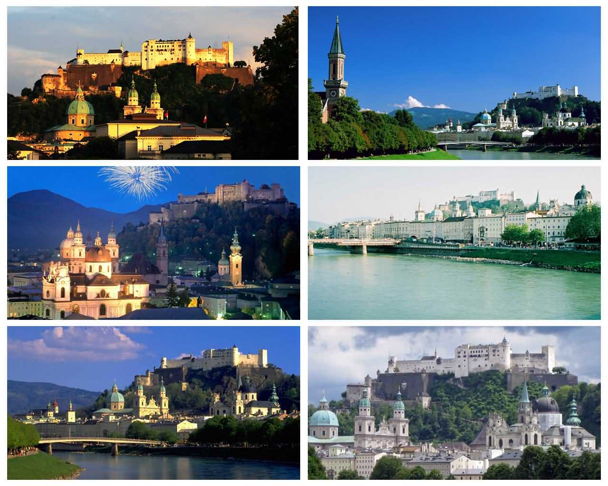
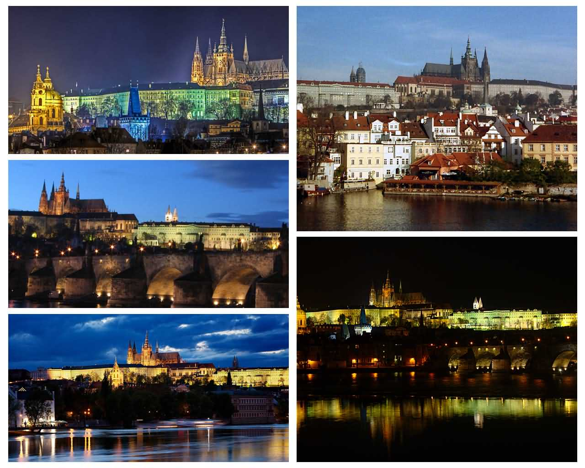
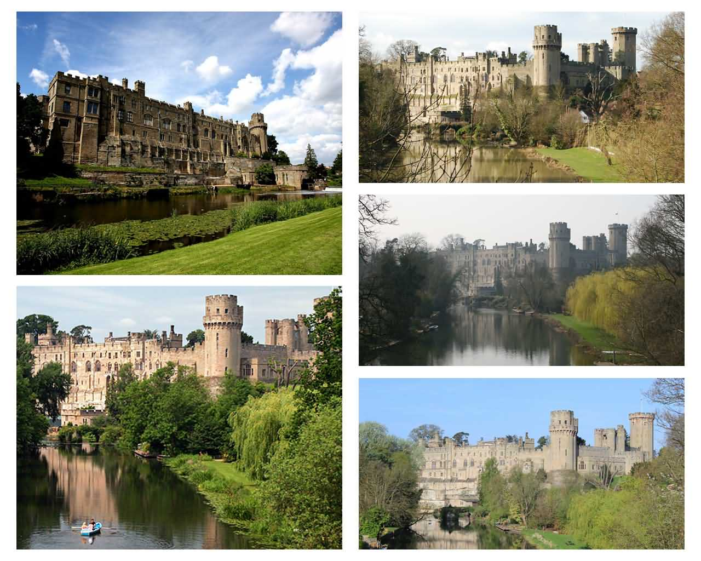

法国舍农索城堡(Château de Chenonceau)

舍农索城堡位于昂布瓦斯以南，依势横跨在谢尔河上，与河流、园林和绿树构成了一幅非常自然和谐的风景画。舍农索城堡建在谢尔河河床上一个老磨坊的两座石墩上。该城堡自1535年后就属于王室领地。 1589年11月1日，凯瑟琳太后最后病死。她把多达40万埃居的遗产，馈赠给了她的女仆们，最后就象圆明园一样，这座城堡接受了革命的战火的洗礼，里面的奇珍异宝流入黑市。
奥地利萨尔斯堡(Salzburg)

萨尔茨堡又译作萨尔斯堡，是奥地利共和国萨尔茨堡州的首府，人口约15万（2007年），是继维也纳、格拉茨和林茨之后的奥地利第四大城市。萨尔茨堡位于奥地利的西部，是阿尔卑斯山脉的门庭， 城市的建筑风格以巴洛克为主，据史料记载，萨尔茨堡是现今奥地利管辖地域内历史最悠久的城市。萨尔茨堡是音乐天才莫扎特的出生地，莫扎特不到36年的短暂生命中超过一半的岁月是在萨尔茨堡度过的。 萨尔茨堡也是指挥家赫伯特·冯·卡拉扬的故乡，电影《音乐之声》的拍摄地。萨尔茨堡老城在1996年被联合国科教文组织列入世界文化遗产的名单。
捷克布拉格城堡(Prague Castle)

布拉格城堡，位于捷克伏尔塔瓦河的丘陵上，是捷克的要塞，在公元第九世纪时布拉格的王子首先在伏尔塔瓦﹝Vltava﹞的山上盖了一座城堡，此后他便在此开始统治他的捷克人民和土地，一直是布拉格王室的所在地， 几世纪以来经过多次扩建，不仅保留许多雄伟建筑和历史文物，现今仍是捷克总统的居所。布拉格城堡有多样化的建筑风格，从古代的罗马式地基，到战争期间的后现代风格，每个年代的风格都或多或少在城堡上留下了痕迹。
英国沃里克城堡(Warwick Castle)

沃里克城堡位于伦敦西北方向约157公里，离莎翁出生地斯特拉福不到10公里。14世纪时，古堡进行改建，石墙代替木栅栏，又增修许多角塔。塔内均有石梯直达塔顶，以便瞭望。17到18世纪，堡内装修成豪门贵族舒适的庄园宅邸。 这里有城堡丘（Castle Hill）和圆塔（Round Tower），而且有人居住。自1088年的亨利伯爵，到居住在城堡的盖伊伯爵，一共有42位伯爵曾住在Warwick Castle，包括圣女贞德的行刑人第十三代伯爵。因此，华威城堡集雄伟和豪华于—身。